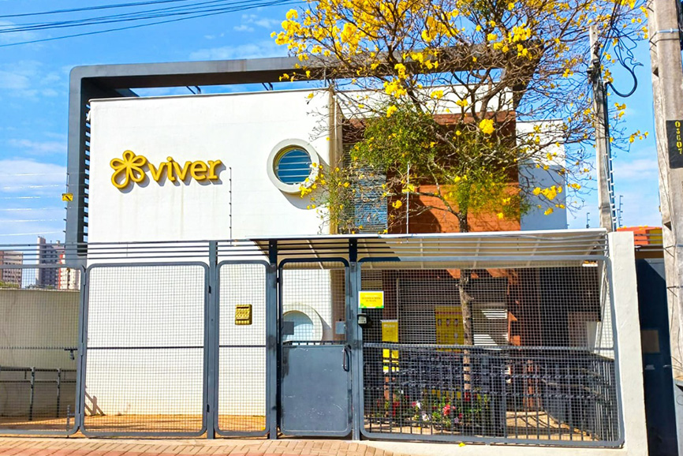

Como Funciona?
1. ONG Cadastra
Instituições publicam suas necessidades rapidamente.
2. Voluntário Encontra
Quem quer ajudar acessa as oportunidades na plataforma.
3. Ação Realizada
O voluntário entra em contato e realiza a ação solidária.
A importância da ação voluntária
O voluntariado transforma vidas, fortalece comunidades e inspira esperança. Cada gesto solidário faz diferença e contribui para um mundo mais justo e humano.

O papel fundamental das ONGs
As ONGs são essenciais para apoiar causas sociais, promover direitos e oferecer suporte a quem mais precisa. Seu trabalho é a ponte entre quem quer ajudar e quem precisa de ajuda.